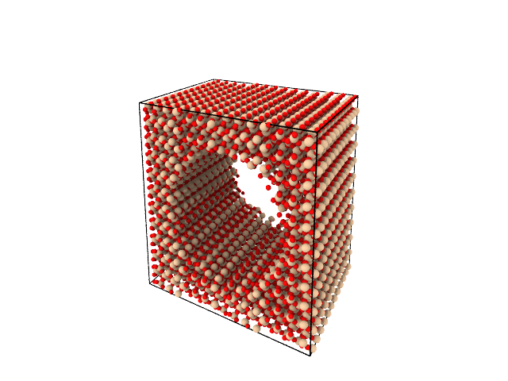

About
Molecular builder is a python package for creating input structures for molecular dynamics simulations.
It is focused on creating bulk structures and carving out geometries. Therefore, molecular-builder comes with a database of crystal structures and a collection og geometries that can be used to create various structures in various shapes.
A main goal of this package is to make the whole process of setting up an initial geometry for a molecular dynamics simulation programmable, and thus reliable.
For example, creating an \(\alpha\)-quartz block with a cylidrical hole in it can be done as follows:
from molecular_builder import create_bulk_crystal, carve_geometry, write
from molecular_builder.geometry import CylinderGeometry
atoms = create_bulk_crystal("alpha_quartz", [60, 60, 60])
geometry = CylinderGeometry([30,30,30], 20, 100, orientation=[1,0,0])
carve_geometry(atoms, geometry, side="in")
write(atoms, "alpha_quartz_cylinder_hole.data")
write(atoms, "alpha_quartz_cylinder_hole.png", camera_dir=[3, 1, -1])
This simple script produces a lammps data file and an image of the created system:
We can make a similar system with water packed in the newly created hole:
from molecular_builder import create_bulk_crystal, carve_geometry, write, pack_water
from molecular_builder.geometry import CylinderGeometry
import numpy as np
atoms = create_bulk_crystal("alpha_quartz", [60, 60, 60])
r = 25
l = atoms.cell[0][0]
geometry = CylinderGeometry([30,30,30], r, 100, orientation=[1,0,0])
water_volume = np.pi*r**2*l
carve_geometry(atoms, geometry, side="in")
pack_water(atoms, volume=water_volume, pbc=4.0, tolerance=1.5, density=0.8)
write(atoms, "alpha_quartz_cylinder_hole_water.data")
write(atoms, "alpha_quartz_cylinder_hole_water.png", camera_dir=[3, 1, -1])